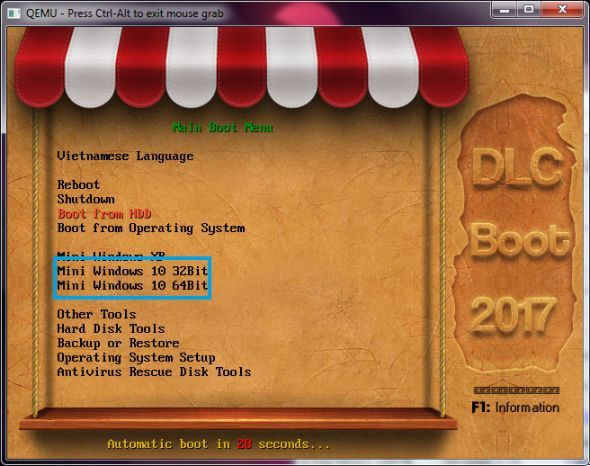
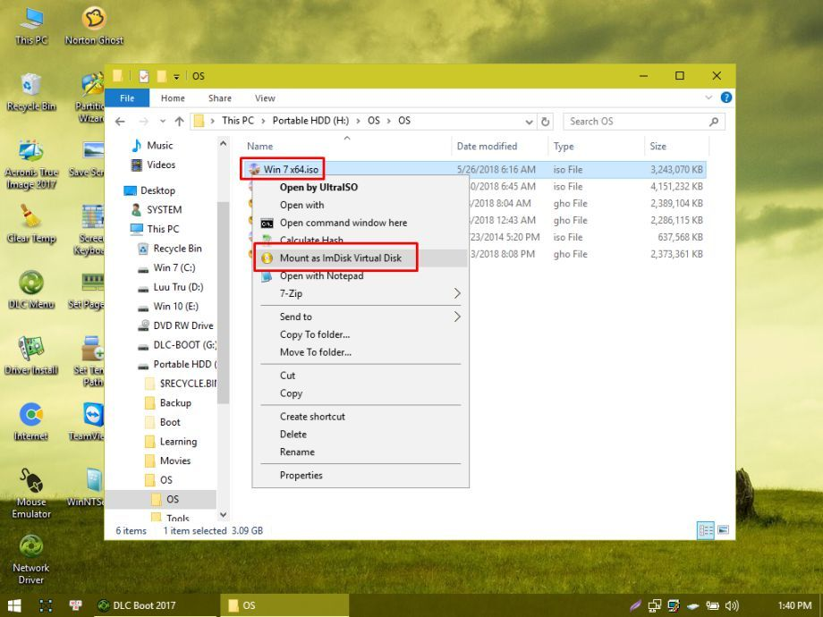

• Mục đích của bài viết là hỗ trợ các bạn cài win một cách nhanh nhất và tối ưu win.
• Nếu định cài Win 7 thì nên dùng bản Ultimate để hạn chế BSOD
• Tất cả link trong bài viết 1 là từ trang chủ, 2 là từ OneDrive của mình, không lấy link bài viết khác nên không sợ die link hay virus
• Pass giải nén (nếu có): itrum
• TC: viết tắt của trang chủ
• Di chuyển hết dữ liệu vừa tải được vào một thư mục rồi chuyển nó sang một phân vùng khác
• Giải nén xong file DLCBoot thì cắm USB vào máy tính và mở DLCBoot.exe lên
• Nhấn vào biểu tượng USB được khoanh đỏ như hình dưới

• Hiện lên hộp thoại
Create USB..., chọn như những vùng khoanh đỏ
• Riêng phần ô vuông màu xanh thì chọn định dạng USB của bạn

• Nhấn vào Create Boot rồi sau đó mới nhấn vào Install Kernel

• Cắm USB DLCBoot và khởi động lại máy tính
• Vào chế độ Boot và chọn USB
(tham khảo cách vào Boot Menu các dòng máy)
• Chọn
Mini Win 10 32bit hoặc
Mini Win 10 64bit

• Sau khi khởi động xong, tìm đến file ISO Win 7 rồi mount ra

• Mớ DLC Menu trên Desktop lên, chọn mục System

• Chọn phần mềm WinNTSetup

• Hộp thoại WinNTSetup hiện lên, nhấn nút Search

• Tìm đến install.wim trong ổ đĩa vừa mount rồi nhấn Open

• Quay lại hộp thoại WinNTSetup, thiết lập tùy chỉnh như hình sau đó nhấn Setup

• Hộp thoại
Ready? hiện lên, tích chọn
Automatically... rồi nhấn OK

• Việc bây giờ chỉ cần ngồi đợi để nó tự động cài đặt Windows, nhanh chậm tùy thuộc tốc độ đọc ghi bộ nhớ ổ đĩa